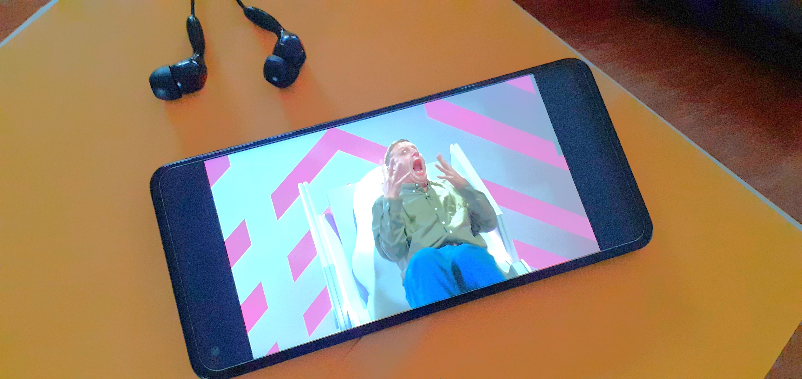

Samsung Galaxy A21s review: Attractive and budget-friendly
Leonardo Mathot
December 8, 2023
The Samsung Galaxy A21s is an affordable, good-looking device that offers some great features. A nice Quad-Camera System, a pretty large screen, and long battery life are some of them.
There are a few things not so good though, but it could be the perfect option for you if you do not need high performance, your budget is limited, and you would like to enjoy your favorite apps without having to worry about the charger.
The best
- Long Battery Life
- Large Screen
- Quad Camera System
Could be better
- Poor Quality Display
- Not Great Performance
Design
The A series phones do not look poor quality as Samsung is good at working with materials and building (TechDaily, 2020). This phone stands out for its attractive design, which offers an elegant and modern appearance, and a large screen.
"One of the Galaxy A21s key features is the 6.5" PLS TFT screen with a small punch-hole cutout around the top left. It has rounded corners as all other recent displays do, and the bezels are trendily thin" (GSMArena, 2020).
Specs
- Body: 163.7 x 75.3 x 8.9 mm, 192g; Plastic body and frame.
- Display: 6.5" PLS TFT, 720 x 1600 px resolution, 20:9 aspect ratio, 270ppi.
- Chipset: Exynos 850 (8nm): Octa-core Cortex-A55@2.0GHz; Mali-G52 MP1.
- Memory: 3/4/6GB RAM; 32/64GB eMMC 5.1 storage; microSDXC (dedicated slot).
- OS/Software: Android 10, One UI 2.1.
- Rear camera: Wide (main): 48 MP, f/2.0, 26mm, 1/2.0", 0.8µm, PDAF; Ultrawide: 8 MP, f/2.2, 123°, 1/4.0", 1.12µm; Macro: 2 MP, f/2.4, fixed focus at 4cm; Depth: 2 MP, f/2.4; LED flash, panorama, Auto HDR.
- Front camera: 13 MP, f/2.2.
- Video capture: Rear camera: 1080p@30fps; Front camera: 1080p@30fps.
- Battery: 5,000mAh; Fast charging 15W.
- Misc: Fingerprint scanner (rear-mounted), accelerometer, gyro, proximity, compass; FM radio, RDS, recording, NFC, 3.5mm jack.
Note. Specs were taken from GSMArena (2020).
Large Screen
"It's a big phone and for the price that's a big plus for a lot of people. However, there's one glaring issue with the A21s display that has to be considered (TechDaily, 2020)". According to TechDaily (2020), Samsung shouldn't have replaced the superior AMOLED screen of previous models (A20) with the LCD display the A21s has, a mistake that outweighs the benefits of an updated appearance.
But this is not as bad as it sounds. "Fortunately there's nothing wrong with what the a21s offers. This big six-and-a-half-inch screen is great for watching movies and browsing social media. Whatever it is you're doing it's going to be a solid viewing experience on this phone (TechDaily, 2020)".

Quad-Camera
Battery Life
With its excellent battery life, the A21s ensures long-lasting use without compromising performance, making it reliable for people who utilize their phone for work or simply for long hours of entertainment.

Other Features

The Galaxy A21s offers efficient security with its fast and reliable fingerprint scanner on the back, providing users with quick and convenient access to their devices. "This setup is just perfect for this phone, I wouldn't change a thing. And if you want to pair it with face unlock you can" (TechDaily, 2020).
The A21s has a 3.5mm headphone jack, which is ideal for those who are not yet ready for the new wireless or USB versions.
Some Drawbacks

Conclusions
References
GSMArena. (2020, August 3). Samsung Galaxy A21s review. https://www.gsmarena.com/samsung_galaxy_a21s-review-2142.php
TechDaily. (2020, July 24). Samsung Galaxy A21s review after 21 days: Get this one instead! [Video]. YouTube. https://www.youtube.com/watch?v=9sXqz1yODoU